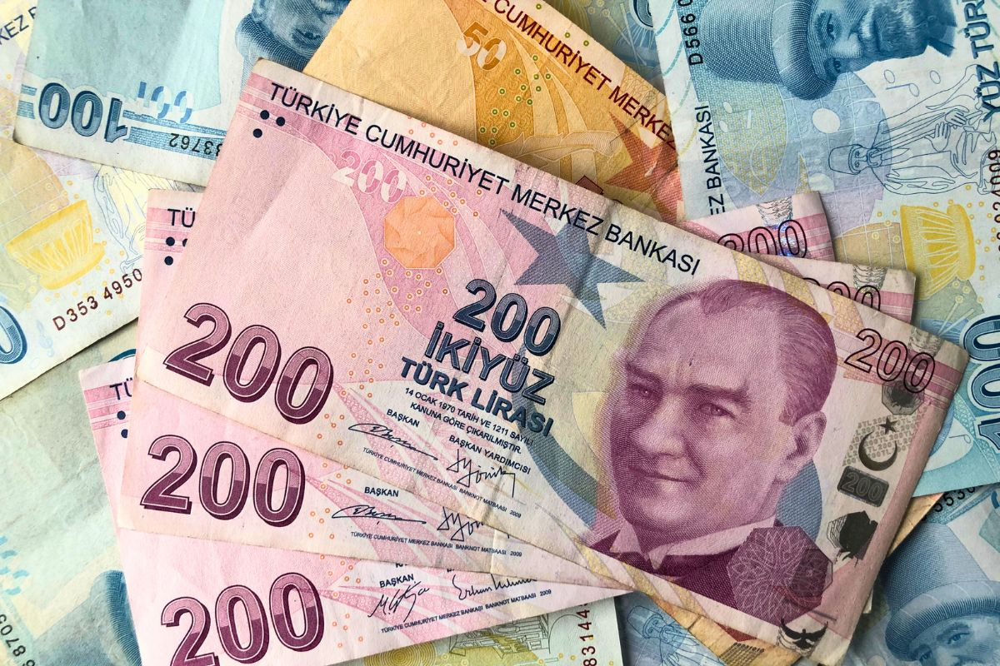
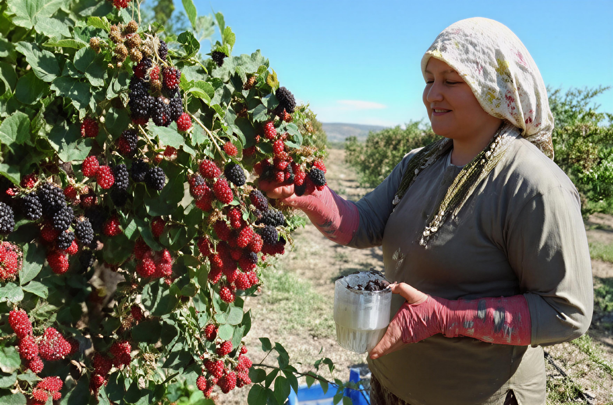

A economia da Turquia constitui-se num misto complexo de indústria e comércio modernos e um setor agrícola tradicional que, em 2010, ainda era responsável por cerca de 30% dos empregos.[13] A Turquia dispõe de um setor privado forte e em rápido crescimento, mas o Estado ainda desempenha um papel preponderante nas áreas de indústria de base, bancos, transporte e comunicações. A Turquia tem o 15.º maior PIB PPC (Paridade do Poder de Compra)[14] e o 17.º maior PIB nominal.[15] O país é membro da Organização para a Cooperação e Desenvolvimento Econômico (OCDE) e do G20. Durante as primeiras seis décadas da República, entre 1923 e 1983, predominou uma abordagem quase-estatal com o planejamento governamental rigoroso do orçamento e das limitações impostas pelo governo sobre a participação do setor privado, comércio exterior, fluxo de moeda estrangeira e investimento direto no estrangeiro. No entanto, em 1983, o primeiro-ministro Turgut Özal iniciou uma série de reformas destinadas a mudar a economia de um sistema estatista isolado a uma mais do setor privado, o modelo baseado no mercado.

A Turquia iniciou uma série de reformas nos anos 1980 com o objetivo de reorientar a economia de um sistema estatista e isolado para um modelo mais voltado para o setor privado. As reformas provocaram um crescimento econômico acelerado, embora com episódios de forte recessão e crises financeiras em 1994, 1999 e 2001. A incapacidade de implementar reformas adicionais, combinada com déficits públicos elevados e crescentes e corrupção generalizada, resultou em inflação alta, volatilidade econômica e um setor bancário fraco. O governo viu-se então forçado a deixar a lira turca flutuar e a adotar um programa de reformas econômicas mais ambicioso, inclusive com uma política fiscal mais rígida e com níveis sem precedentes de empréstimos do Fundo Monetário Internacional. Em 2002 e 2003, as reformas começaram a dar resultados e o governo logrou estabilizar as taxas de juros e pagar a dívida pública. Desde então, a inflação e a taxa de juros têm decrescido consideravelmente. A economia cresceu à ordem de 7,5% ao ano entre 2002 e 2005. Em 1 de janeiro de 2005, a lira turca foi substituída pela "nova lira turca", com o corte de seis zeros. Em 2005, a Turquia atraiu US$ 9,6 bilhões * em investimento estrangeiro direto, resultado do programa econômico que incluiu grandes privatizações, a estabilidade provocada pelo início das negociações para a adesão à União Europeia, o crescimento econômico e mudanças estruturais nos setores bancário, de varejo e de telecomunicações.
Em 2018, a Turquia:

(Produção de amoras na Turquia)